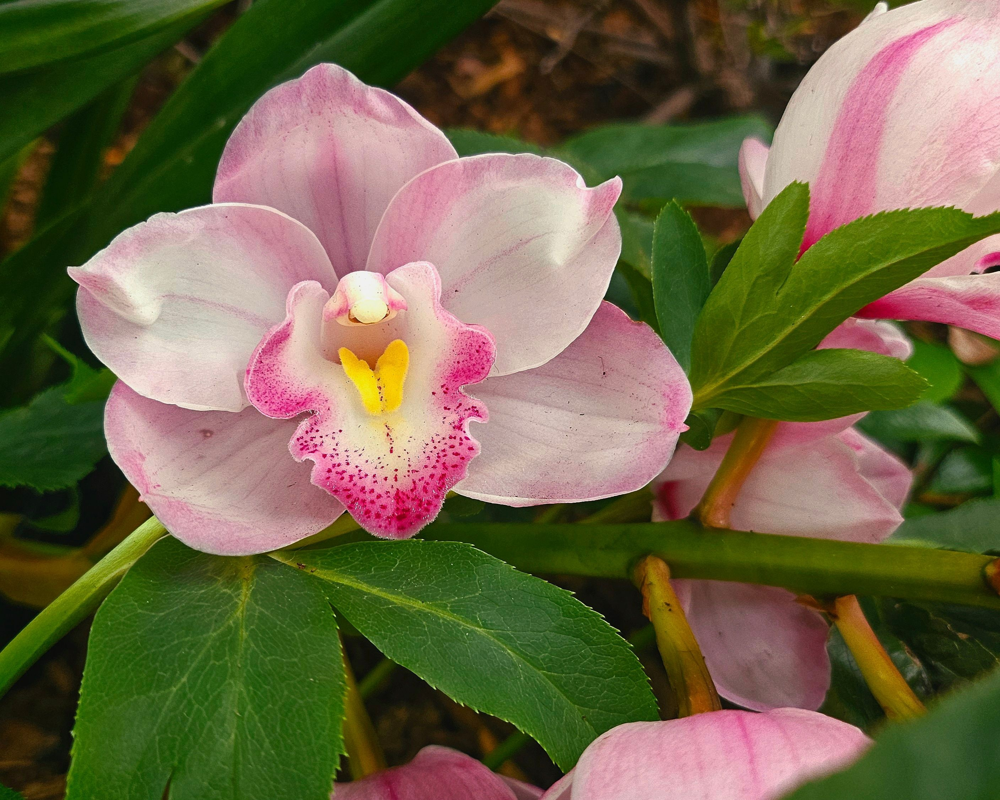
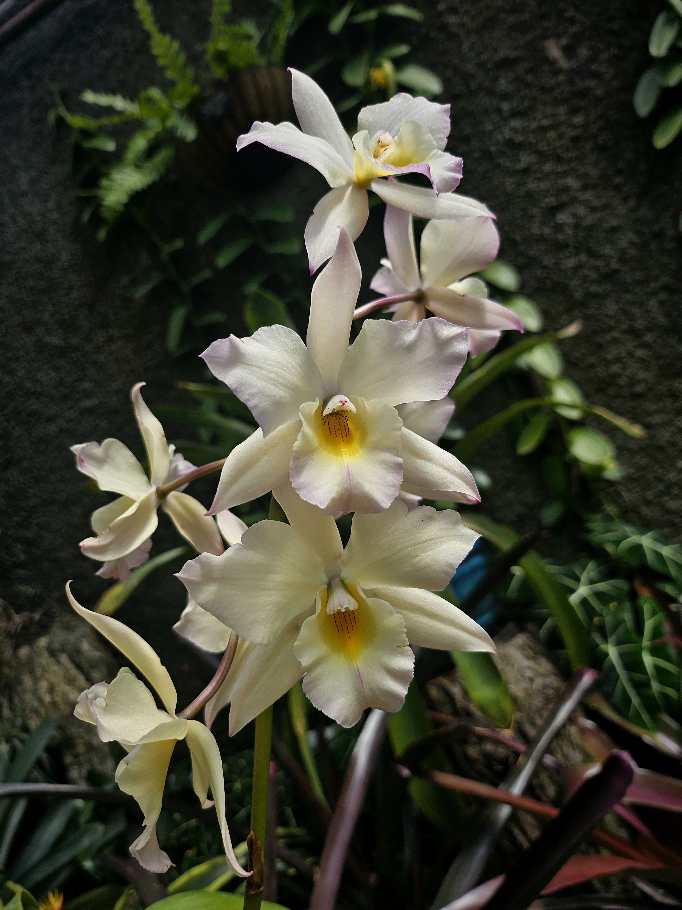
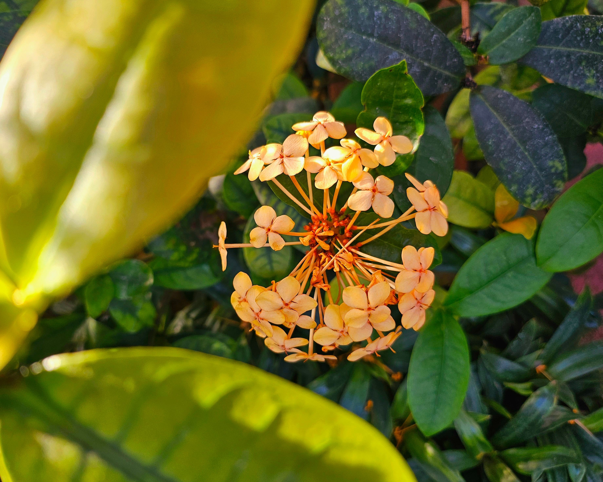

I enjoy many genres of music, however, I've recently gotten into reggaeton. Tainy is my favorite producer. Here's an album:
DATA - TainyHere's a video I took at a SE SO NEON concert.
I like taking photos of flowers, here's some:
  I am interested in the aesthetics of flowers and their psychoactive properties. Flowers can be visually pleasing but the consumption of certain flowers can have life-changing effects.
Visit this page to read more.